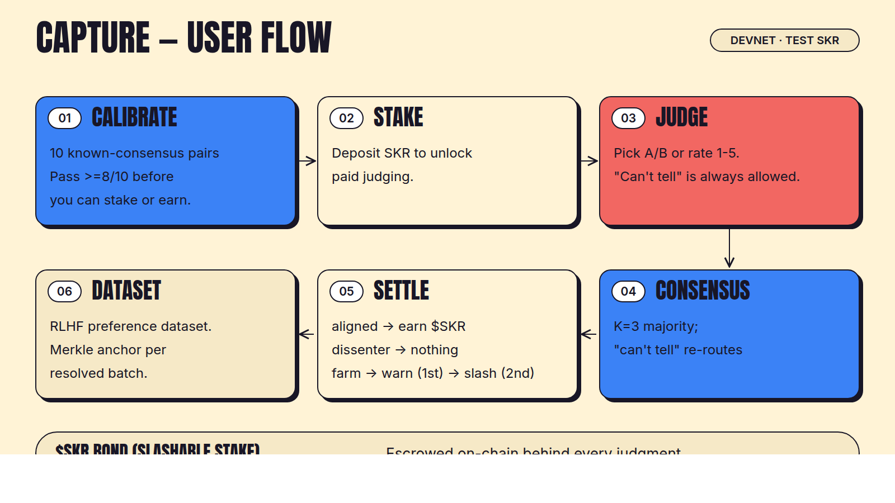
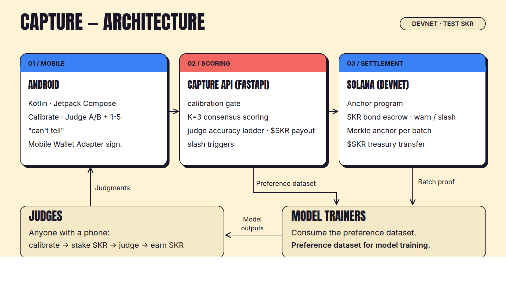
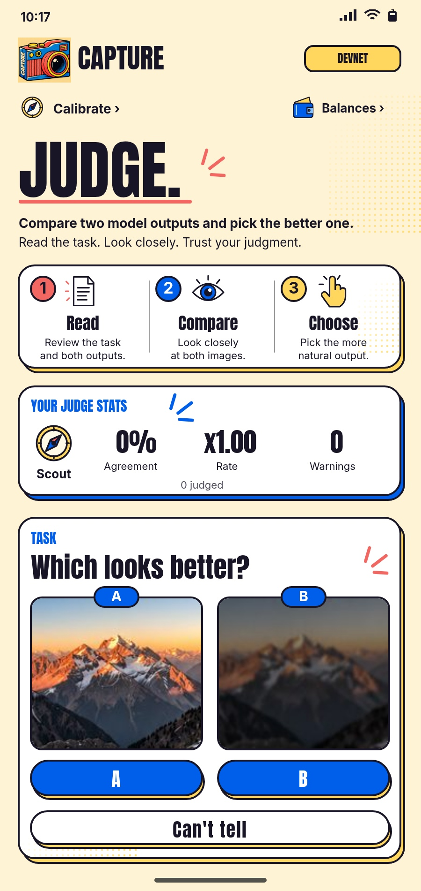
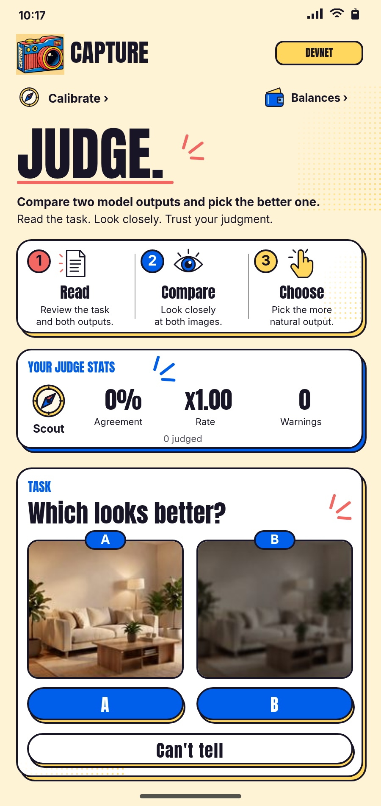
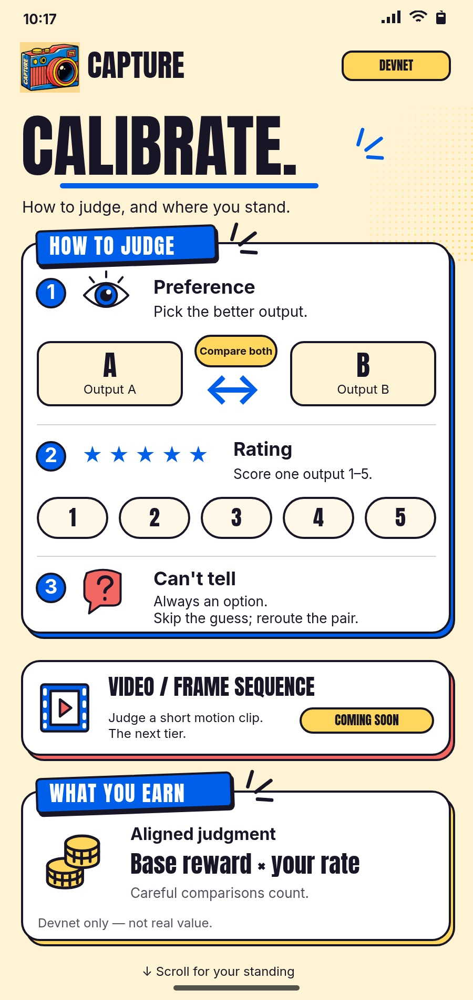
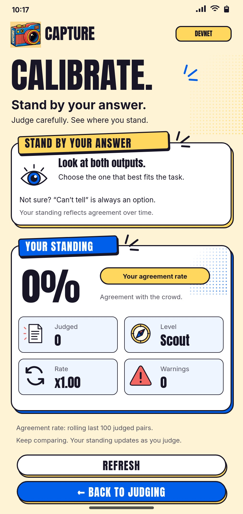
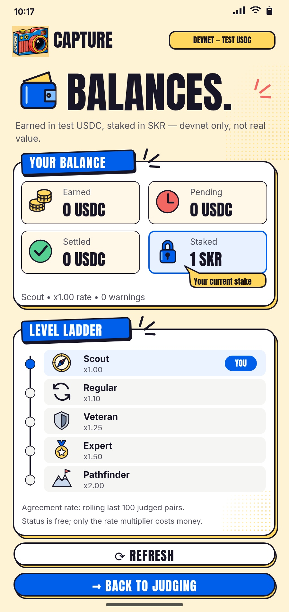

Capture is a decentralized RLHF network. Humans judge a vision model's outputs, consensus decides who gets paid, and a slashable stake prices every judgment.
Test tokens on devnet Over 18, self-attested No production money
Pass 10 known-consensus pairs before you can stake or earn.
Deposit SKR to unlock paid judging. Your stake is the collateral at risk.
Pick the better of two outputs, or rate one 1–5. "Can't tell" is always allowed.
K=3 majority decides. Agree and earn; dissent earns nothing; farming is warned, then slashed.







Vision judge benchmark
Our vision quality-judge grades each submission against the capture spec before acceptance. On a 45-sample labeled set it scored 71.1% — a measured baseline that improves as labeled data grows.
| Class | Correct |
|---|---|
| Ground-level accept | 5 / 5 |
| Blank | 5 / 5 |
| Blur | 5 / 5 |
| Screenshot | 5 / 5 |
| Underexposed | 4 / 5 |
| Watermark | 4 / 5 |
| Blown-out | 2 / 5 |
| Static wall | 2 / 5 |
| Eye-level | 0 / 5 |
13 false-accepts, 0 false-rejects: the judge never wrongly rejects good content, but over-accepts some bad content.
Test suite (measured 2026-10-29)
Backend 212 passed / 10 skipped · Rust 15 · Android 67. Counts are from a real run against the live checkout.